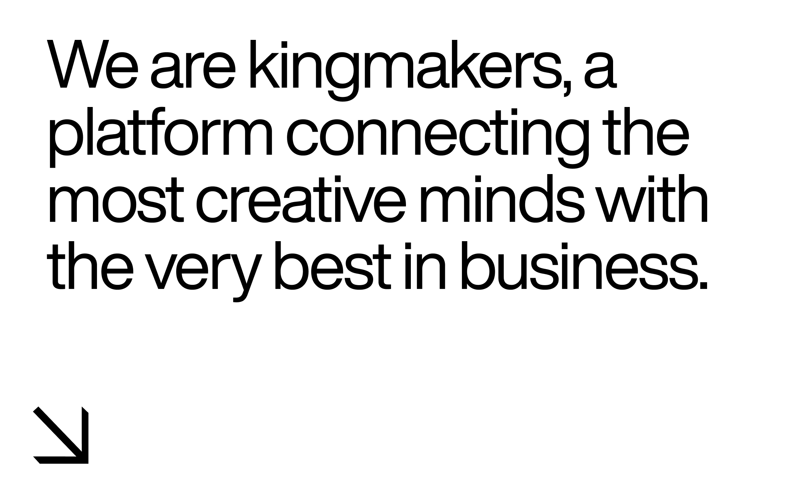
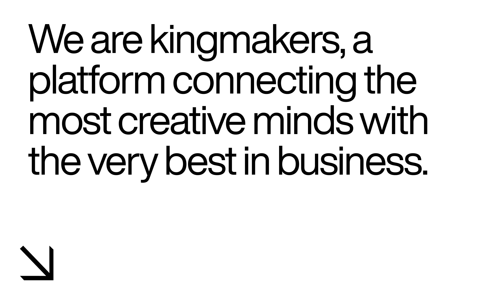
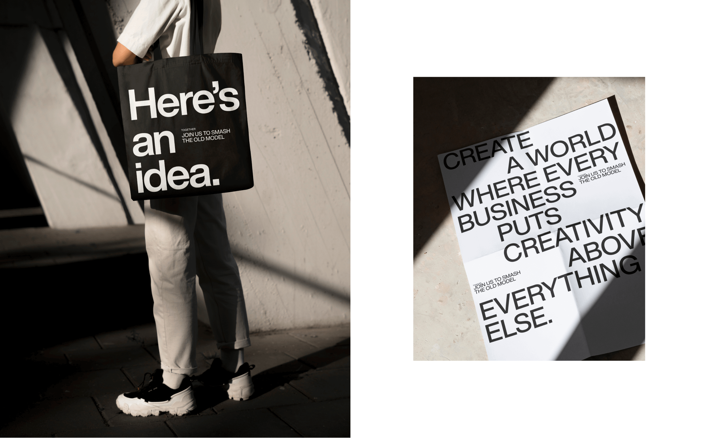
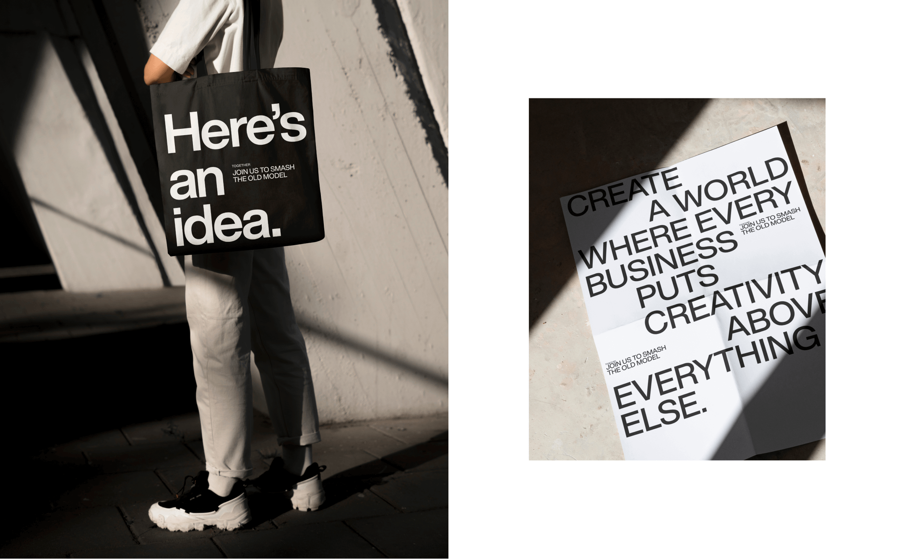

togetherr approached us to help them develop an identity for a platform
that will match teams of marketing professionals to brand projects
worldwide. In other words, it enables creative minds to own their
creativity. togetherr is the new platform built by Fiverr and leaders in
the creative industry with a mission to change how brands and creatives
collaborate. togetherr’s brand speaks first and foremost to creatives,
people whose enemies are system, complexity, lack of bravery,
excitement, and time. That’s why their communication is bold and
straightforward, with no BS. The design toolkit we chose for them is
limited, but within it, we could go as crazy or as minimal as we need
to. The identity is based on a black and white color palette and
Helvetica Now, a new take on a classic font associated with the
advertising world. We honored it by making it the heart of our visual
language. The color comes in through the work of the creatives, giving
them space and respect. We added patterns based on a square that ties
them with the logo.
Client | togetherr by Fiverr
togetherr Design team | Nadav
Barkan, Alex Leibo, Or Harel, Amir Guy, Tamar Reshef Bezalel
Brand
development | Under, Inbal Lapidot Vidal, Anastasia Vlasenko
 



 
